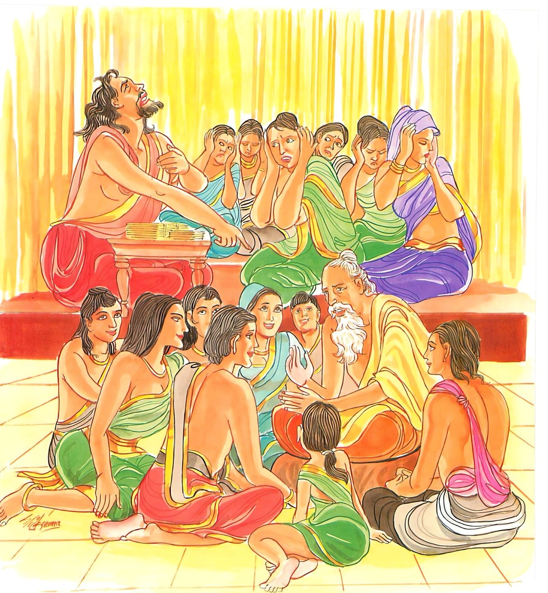

19-2 සවග මහණෝ
මෙම කතාව ධම්මපද අටුවාවෙන් ද කියවන්න.
න තෙන පණ්ඩිතො හොති යාවතා බහු භාසති
ඛෙමී අවෙරී අභයො පණ්ඩිතො’ති පවුච්චති.
යම් පමණ කාරණයෙකින් සඟ මැද ආදියෙහි (අත්තුක්කංසන පරවම්භන වශයෙන්) බොහෝ කොට බෙණේ ද, එපමණ කාරණයෙකින් ධර්මධර නම් නො වෙයි. යමෙක් වනාහි තෙමේ ක්ෂේමී වේ ද, (පංචදුශ්චරිත වෛරයන් නැති හෙයින්) වෛර නැත්තේ ද, (පංච වෛරයන් කෙරෙන්) භය නැත්තේ ද (නොහොත් අනුන් නො බවා ද) හෙතෙම පණ්ඩිත යැ කියනු ලැබේ.

සවග මහණෝ වෙහෙරෙහි හා ගමෙහි හා දන්හල් අවුල් කරමින් එහි වළඳනා මහණුන්ට ගැහැට කරමින් හැසිරෙන්නාහ. දවසක් ගමෙහි දන්හලක දන් වළඳා පැමිණි තරුණ මහණුන් හා හෙරණුන් අතින් වෙහෙර වැසි භික්ෂූන් වහන්සේලා “ඇවැත්නි! ගමෙහි දන්හල් කෙසේ පවතී දැ?”යි ඇසූහ. “ස්වාමීනි! නො අසනු මැනවි, සවග මහණෝ ‘අපි ම ව්යක්තයම්හ’ අපි ම පණ්ඩිතයම්හ, මුන්ට පහර දී මුන් හිසැ කුණු කසළ දමා මෙතැනින් මුන් පන්නා හරිමු’යි අප පිටි කොන්දෙන් අල්ලා ඇඟපත කුණුකසළ දමා බත්හළ අවුල් කළහ”යි ඔවුහු කීහ. එය ඇසූ භික්ෂූන් වහන්සේලා බුදුරජුන් වෙත ගොස් වැඳ එ පුවත බුදු රජුන්ට දන්වාලූහ. “මහණෙනි! මම, පමණ නො සලකා බොහෝ සේ කටට ආවක් කියමින් අනුන් වෙහෙසට පත් කරණ දොඩමලු තැනැත්තහු පණ්ඩිතයෙකැයි නො කියමි, උපද්රව රහිත වූ වෛර නැත්තා වූ නිර්භය වූවහු ම පණ්ඩිතය යි කියමි”යි වදාරා මේ ධර්මදේශනාව කළ සේක.
න තෙන පණ්ඩිතො හොති යාවතා බහු භාසති,
ඛෙමී අවෙරී අභයො පණ්ඩිතොති පවුච්චතීති.
යම් පමණ කරුණෙකින් බොහෝ කොට බෙණේ ද එපමණින් පණ්ඩිත නො වේ. (යමෙක්) උවදුරු නැත්තේ ද, වෛර නැත්තේ ද, බිය නැත්තේ ද හෙතෙමේ පණ්ඩිත ය යි කියනු ලැබේ.
න තෙන පණ්ඩිතො හොති යාවතා බහු භාසති - යම් පමණ කරුණෙකින් බොහෝ කොට බෙණේ ද එපමණ කරුණෙකින් පණ්ඩිත නො වේ.
යමෙක් සඟමැද හෝ ගිහි පිරිස් මැද තමන් උසස් කොට පරා පහත් කොට දක්වමින් පමණ ඉක්මවා කල්වේලා නො බලා තැන නො තැන නො සලකා කටට ආ ආවක් කියමින් දොඩමලු ව බොහෝ කොට කතා කෙරේ ද එපමණෙකින් ඔහු පණ්ඩිතයෙක් නො වේ. කුත්සිතභාෂී වේ.
ඛෙමී අවෙරී අභයො පණ්ඩිතො ඉති පවුච්චති = උවදුරු නැත්තේ වෛර නැත්තේ නිර්භය වූයේ පණ්ඩිත ය යි කියනු ලැබේ.
ඛෙමී නම්: උපද්රව උපස්සර්ග නැත්තේ ය. අවෙරී නම්: ප්රාණඝාතාදීපංචවිධ දුශ්චරිත නැත්තේ ය. අභය නම්: තමාගෙන් අන්හටත් පරාගෙන් තමාටත් බිය නැත්තේ ය. පණ්ඩිතො යනු කින ලදි. [1]
ධර්මදේශනාවගේ අවසානයෙහි බොහෝ දෙන සෝවන්ඵලාදියට පැමිණියාහුය.
ෂඩ්වර්ගීයභික්ෂු වස්තුව නිමි.
-
2-1 ‘පණ්ඩිතා’ යනු බලනු. ↑